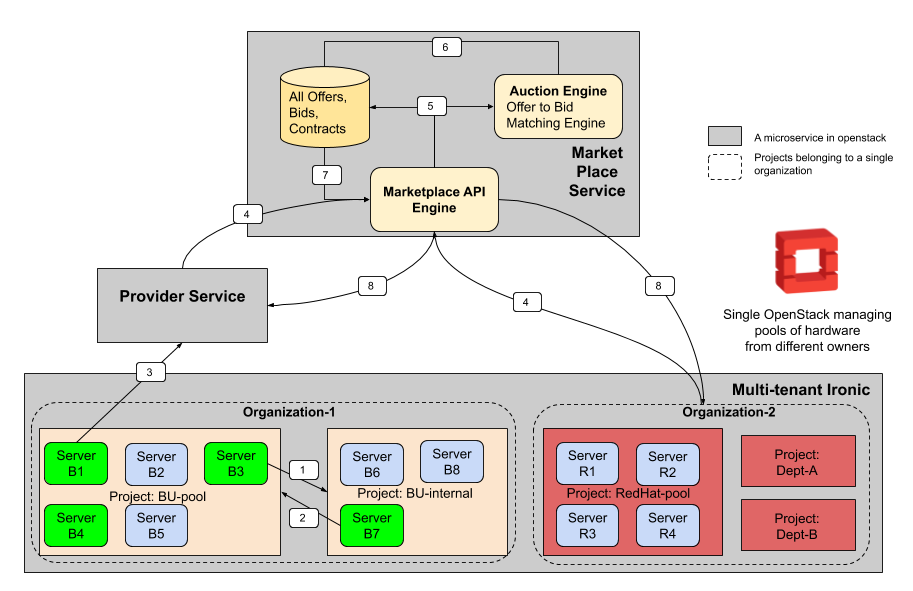

FLOCX Architecture¶
 Flocx architecture diagram
Flocx architecture diagram
To enable such a marketplace we will have to create some new services and make changes to existing OpenStack services.
Micro-services that make up FLOCX¶
FLOCX consists of the following new micro-services that will be added to OpenStack:
Provider Service: A new micro-service that offers a platform per OpenStack deployment to manage the requests for offering servers in the marketplace on behalf of its users. Owners of decide which servers to offer in the marketplace by submitting their offers to the provider service. Provider service then publishes these offers to the marketplace on their behalf.
Marketplace Service: A new micro-service that gathers offers, bids and provides contracts when suitable matches are found between offers and bids.
Auction Engine: The matchmaking service that maps offers to suitable bids and vice-versa.
Changes to Existing OpenStack Service¶
Ironic: Current release of Ironic (as of summer of 2019) does not support multi-tenancy. We will make necessary changes to Ironic so that it can support multi-tenancy.
A multi-tenant Ironic offer following advantages:
This allows for logically isolating hardware that belongs to different groups.
Organizations to put their hardware under the control of a single Ironic deployment while maintaining ownership and control of their servers.
Small hardware owners (single machine owners) do have to setup a whole OpenStack to participate in FLOCX. They can simply join ironic of any existing OpenStack deployments and get started.
Minimum Viable Product (MVP)¶
We use agile methodology to develop this system. To begin, we would like to keep things simple. Following are the simplifications that we have assumed in our minimum viable product.
Assumptions made for MVP¶
There is only one OpenStack deployment managing all hardware from all organizations.
FLOCX-microservices (
provider service&marketplace service) will be services added to the single OpenStack deployment.All servers are of homogeneous configuration.
All hardware is managed by Ironic where each organization is assigned a project.
Overview of the workflow of FLOCX MVP¶
FLOCX workflow
Please refer to the figure for each steps described below:
Internally an organization can distribute its hardware by creating new projects.
Internal projects can add servers that their organization owns which they release back when they are done using it.
When an organization wishes to make their servers available for rent by another organization, they will submit offers to the
provider-serviceProvider service, after doing necessary authentication and appending the hardware configuration information to the offer, will publish the offers in the marketplace. Other organizations that need extra hardware may submit bids that describe the hardware configuration they require and the price they are willing to pay.
The
Marketplace API enginestores pushes all these offers and bids on a continuous basis to theAuction Engineand also store them into its database.Auction Enginefinds suitable matches of offers with bids and creates contracts for all of the suitable matches. These are stored in the marketplace database.The
Marketplace API enginefetches the information regarding new contracts.Both the offering and the bidding organizations are notified about the newly formed contract.
GLOSSARY¶
Offers¶
Contains data about the server available for rent. Includes information like hardware configuration, Beginning and Ending time of availability and price at which the server is available for rent.
Bids¶
Contains data about the type of machine the bidders wishes to rent. It includes
information like start_time - when the server is needed, Duration: how long
will it be used, price: what is the price the bidder is willing to pay. It
also includes desired hardware configuration if any.
Contracts¶
Contains data about which offers have matched with particular bid. It also states the duration for which the servers will be available on rent and rate at which the rent will be charged.